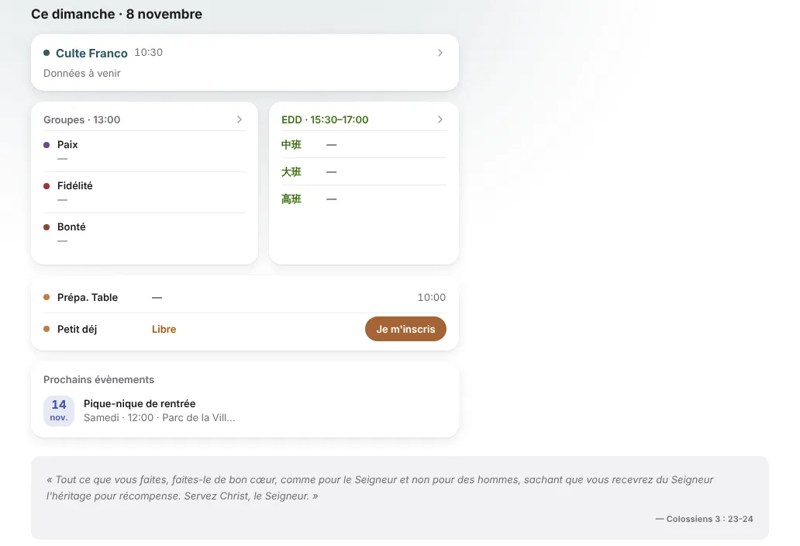
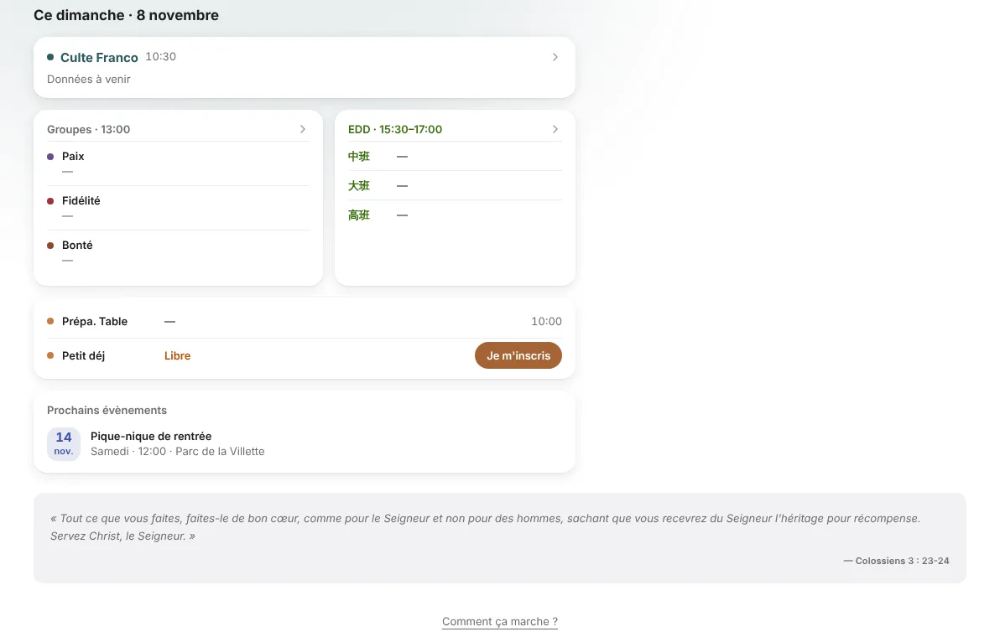

Planning en grand écran : colonne de droite vide sans service à venir
À confirmer. la forme à deux colonnes avec un vrai service, en grand, n'a pas été regardée : le compte de test n'en a aucun. La proposition A ne change que le cas sans service.
L'avant


- Les cartes s'arrêtent à x 840, le verset va jusqu'à x 1 240.
- Le contenu fait 952 px à 1 280 et 1 112 px à 1 440.
La colonne s'efface
RecommandéeCe dimanche · 8 novembre
« Tout ce que vous faites, faites-le de bon cœur, comme pour le Seigneur et non pour des hommes, sachant que vous recevrez du Seigneur l'héritage pour récompense. Servez Christ, le Seigneur. »
Elle réutilise la rangée en trois colonnes déjà dessinée pour le grand écran, remplit toute la largeur du contenu, sans colonne vide, et ne fait rien dire au site quand il n'a rien à dire.
- Ce qui change
- Sans
pourMoiBloc, « Ce dimanche » prend toute la largeur, bord droit au bord du contenu : 952 px à 1 280, 1 112 px à 1 440. Le verset est dessiné ici en romain, comme le recommande quotidien-12, dans sa boîte actuelle (quotidien-13 est écarté à la revue). - La requête de conteneur à 720 px qui existe déjà s'enclenche : Groupes, EDD et Table se rangent en trois colonnes (1,2 / 1 / 1, soit environ 346 / 288 / 288 px à 1 280).
- Prochains évènements passe dessous, en deux colonnes (le code le fait déjà en grand). « Parc de la Villette » tient en entier.
- Sans
- Pour
- Aucun nouveau composant.
- Les trois cartes et le Culte vont jusqu'au même bord droit : plus de colonne vide.
- La Table a sa propre colonne.
- Contre
- La page n'a pas la même forme pour un membre qui sert et pour un membre qui ne sert pas.
- La carte Culte devient très large pour une ligne de texte.
- Effort
- Petit (
src/app/planning/page.tsx:219-224, une condition).
La colonne garde sa place, avec un état vide
Ce dimanche · 8 novembre
Pour moi
Aucun service prévu pour toi dans les plannings.
Voir mes services passés« Tout ce que vous faites, faites-le de bon cœur, comme pour le Seigneur et non pour des hommes, sachant que vous recevrez du Seigneur l'héritage pour récompense. Servez Christ, le Seigneur. »
我的安排
排班表里暂时没有你的服事。
查看过去的服事- Ce qui change
- Une carte « Pour moi » / « 我的安排 » occupe la colonne de droite.
- Texte : « Aucun service prévu pour toi dans les plannings. » / « 排班表里暂时没有你的服事。 »
- Lien : « Voir mes services passés » / « 查看过去的服事 ».
- Pour
- La mise en page ne bouge jamais.
- Le membre apprend où ses services apparaîtront.
- Contre
- Environ 400 px pour dire « rien », chaque semaine, à la plupart des membres.
- Une carte de plus, ce qui ajoute à la fadeur.
- Effort
- Petit à moyen (état vide de
PourMoi, trois clés fr/zh).
Évènements et verset montent à droite
Ce dimanche · 8 novembre
« Tout ce que vous faites, faites-le de bon cœur, comme pour le Seigneur et non pour des hommes, sachant que vous recevrez du Seigneur l'héritage pour récompense. Servez Christ, le Seigneur. »
- Ce qui change
- La colonne de droite reçoit Prochains évènements, en liste verticale, puis le verset.
- « Ce dimanche » reste à gauche.
- Pour
- La place est remplie avec du vrai contenu.
- Le verset en texte nu tient dans une colonne étroite, lignes courtes (environ 60 caractères).
- Contre
- Contredit une décision déjà prise (« verset gardé en bas », question 1 de la spec).
- Avec un service, il faut une règle d'ordre pour trois blocs empilés.
- Effort
- Moyen.